웹 접근성 100%
5건 실무 프로젝트 완료
반응형 UI & Cross-Browser
Publishing Skill
HTML5
Standard
HTML5
Semantic
SEO
OpenGraph
웹 표준을 준수하고 Semantic Tag를 활용해 견고한 UI를 구축하며, 컴포넌트 UI를 설계하여 효율성 및 유지보수성을 높였습니다. 또한 OpenGraph를 적용하여 SEO 최적화도 수행하였습니다.
CSS3
Styling
CSS3
Variables
BEM
SCSS
CSS Variables에 Design System 구축, 공통 CSS를 적용하여 프로젝트 일관성 및 유지보수성을 높였습니다. 또한 BEM 방법론을 도입하여 스타일 충돌을 사전에 방지하고, 큰 규모의 프로젝트는 SCSS의 @mixin, Nesting등을 활용하여 생산성 및 가독성을 높였습니다.
JavaScript
Interaction
JavaScript
ES6+
jQuery
Animation
전자교과서 프로젝트에서는 구형 런처 구동 호환성 및 생산성을 위해 JS와 jQuery를 병행해서 사용하였습니다. 또한 JS / jQuery와 CSS Keyframes를 복합 활용하여 학습자의 이해를 돕고 몰입감을 높이는 Interaction / Motion 구현 및 동적 기능 개발 경험이 있습니다.
React
React
Components
Hooks
Vite
React와 Vite 기반의 개발환경에서 컴포넌트 단위로 설계된 'TaskFlow' 웹앱을 구축했습니다. Styled-Components를 활용해 확장성 및 유지보수성을 높였습니다.
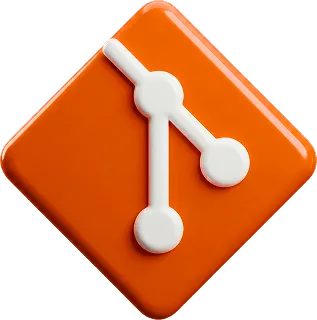
Git
Git
Branch
Merge
Conflict
포트폴리오 및 개인 프로젝트에는 Git을 사용해 Branch 기반 작업과 Merge 흐름을 주도적으로 운영하고 있습니다. 전자교과서 프로젝트에서는 SVN의 Trunk 기반 환경에서 Update / Commit 절차를 준수하고, Conflict 발생 시 Diff를 기준으로 소통하여 수정 하거나 Revert로 대처하였습니다.
A11y
Accessibility
KWCAG 2.2
WAI-ARIA
Screen Reader
웹 컨텐츠 접근성(KWCAG 2.2) 기준을 준수하며 Semantic Markup과 WAI-ARIA 속성들을 적용하여 웹 접근성을 고도화 하였습니다. 특히 실사용자 스크린리더 테스트를 수행하였고 그 결과 전자교과서의 접근성 평가 기준 100%를 달성한 실전 경험을 보유하고 있습니다.
Figma
Figma
Tokens
Design System
Prototyping
Figma Tokens 기반의 디자인 시스템을 CSS Variables로 동기화하여 프로젝트 UI 일관성을 유지합니다. AI 도구를 보조 수단으로 활용하여 개발 효율을 높이고, 확보한 시간은 UI/UX 디테일에 투자합니다.
RWD
Responsive
Media Query
Flexbox
Grid
Media Query, Flexbox, Grid를 활용해 반응형 · 적응형 UI를 구현하고, Vendor Prefix 및 CSS Fallback 처리를 통해 Cross-Browser 호환성을 확보하여 디바이스/브라우저 별 일관성 있는 UI/UX를 제공합니다.
Edu & Experience
2024. 06. ~ 2025. 08.
아이스캔디
개발팀 퍼블리셔로 1년 2개월 근무
전자교과서 및 전자저작물 프로젝트 5개 수행
2023. 12. ~ 2024. 04.
퍼블리셔 실무 과정 학습
웹 퍼블리싱 실무 과정 & 프론트엔드 개발 코스 수료
React, Styled-Components, SCSS, Git, Figma
2023. 06. ~ 2023. 12.
프론트엔드 학습
프론트엔드 개발 독학
HTML5, CSS3, JS, jQuery
2020. 01. ~ 2023. 08.
공영식품(본사)
공영식품 본사 영업본부 S/V
신규 매장(직/가맹점) 오픈 시 메뉴얼 및 업무 프로세스 구축
2018.
학사학위 취득
사이버 대학 학점은행제(경영학과)
재직 중 학업 병행하여 학위 취득
2016. 06. ~ 2020. 01.
공영식품(직영점)
공영식품 직영점 점장 및 주방 실장
4년간 5개의 직영점을 순환하며 관리 및 운영 경험
2015. 07. ~ 2016. 06.
가츠라(일식)
주방 부실장
전 직장 경력을 살려 주방에서 근무
2013. 07. ~ 2015. 07.
페페론치노(양식)
주방 직원
첫 직장으로 주방업무 경험
Resume
Main Projects History
㈜아이스 캔디에서 수행한 주요 프로젝트 입니다.
프로젝트 결과물은 사내 보안 규정 상 공개가 어려워 기술적 기여도와 핵심 성과 위주로 기술했습니다.
천재 중등 과학 1학년 학생용 전자교과서
- 방대한 페이지 관리를 위한 컴포넌트 및 반응형 UI 설계
- CSS 모듈화 및 BEM 방법론 을 도입하여 유지보수 효율 증대
- Design System을 구축하여 디자인-개발 간 오차 최소화
- 학습 몰입도를 높이는 인터렉션 및 CSS 애니메이션 작업 수행
- 최신 브라우저 및 구형 런처 환경까지 고려한 Cross-Browser 작업 수행
- 시각장애인 학습자를 위한 스크린리더 최적화로 웹 접근성 인증 기준 100% 달성
Other Projects History
대규모 페이지 양산 및 유지보수 프로젝트의 특성을 고려하여, 물량(Volume)과 기여도 위주로 요약했습니다.
| Project Name | Period | Volume | Contribution |
|---|---|---|---|
| 천재 초등 수학 3, 4학년 학생용 전자교과서 | Period 4 Months | Volume 2,900p | Contribution 20% |
| 천재 초등 사회 5, 6학년 교사용 전자저작물 | Period 2 Months | Volume 2,100p | Contribution 25% |
| 동아 초등 수학 5, 6학년 학생용 전자교과서 | Period 2 Months | Volume 3,000p | Contribution 15% |
| 동아 초등 수학 3, 4학년 교사용 전자저작물 | Period 1 Month | Volume 300p | Contribution 25% |
Web Publishing
웰라이프내과의원
CSS 변수 기반 디자인 시스템 설계
Figma Design Token과 CSS 변수를 연동한 디자인 시스템을 구축하여 다크모드/라이트모드 토글 기능을 구현하고, 디자인-개발 간 일관성을 확보했습니다. Semantic Markup 기반의 공통 컴포넌트를 설계하였고, 폼 유효성 검사와 피드백 시스템으로 완성도 높은 UI/UX를 제공합니다.
-
Lighthouse 접근성 100점
-
OpenWAX(KWCAG) 접근성 오류 0개
| 항목 | 내용 |
|---|---|
| 작업 기간 | 14 일 |
| 담당 역할 | 기획 / 디자인 / 퍼블리싱 |
| 기술 스택 | HTML + CSS + JS |
| 라이브러리 | Swiper.js, AOS.js |
| 주요 성과 |
|
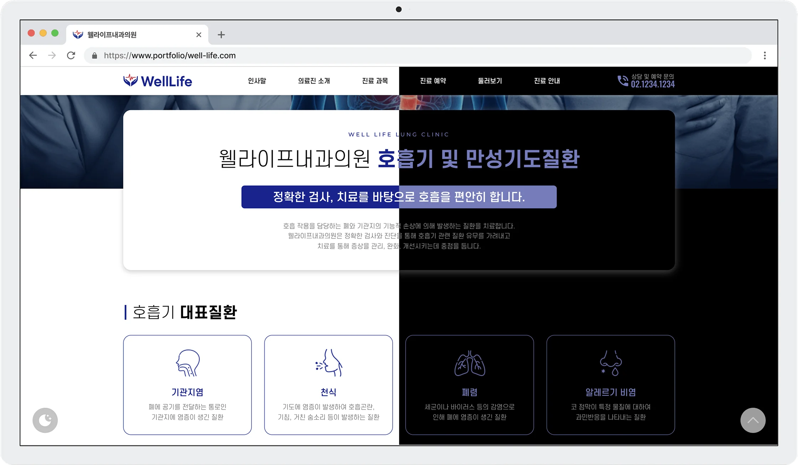
Light / Dark Mode
Color Theme
theme
primary #19248C
primary #19248C
theme
secondary #4CB9E7
secondary #4CB9E7
bg
primary #FFFFFF
primary #FFFFFF
신뢰(Trust)와 치유(Healing)
의료 기관의 전문성과 신뢰감을 주는 Deep Blue 색상을 메인으로, 정보의 가독성을 위해 밝도 대비가 확실한 White 색상을 베이스로 사용하였습니다.
Typography
text
primary #000000
primary #000000
text
secondary #6B6B6B
secondary #6B6B6B
text
tertiary #A6A6A6
tertiary #A6A6A6
명확한 정보 전달을 위한 타이포그래피
의료 정보의 정확한 전달을 위해 가독성이 우수하고 현대적인 고딕 계열의 "에스코어드림" 으로 선정했습니다. 영문 텍스트에는 시인성이 뛰어난 "Montserrat" 를 사용하였고, 숫자 영역에 "Gmarket Sans" 를 별도 적용하여 전화번호, 진료 시간 등 핵심 데이터의 텍스트를 쉽고 빠르게 인지할 수 있도록 정보의 위계를 설계했습니다.
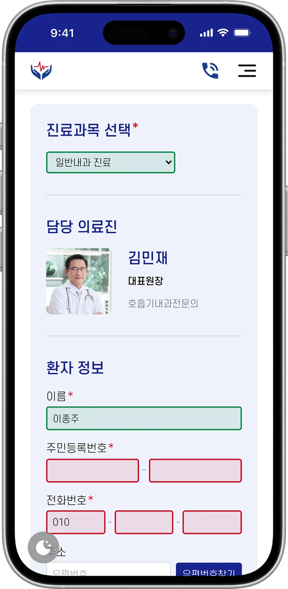
Form Validation
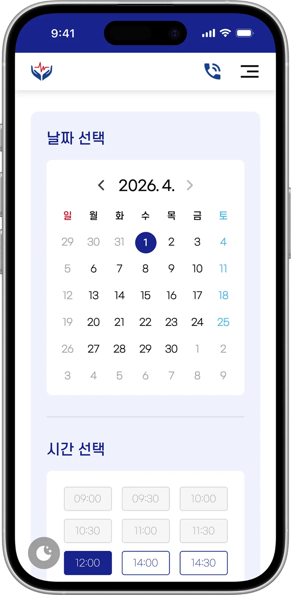
Date Picker
React Web App
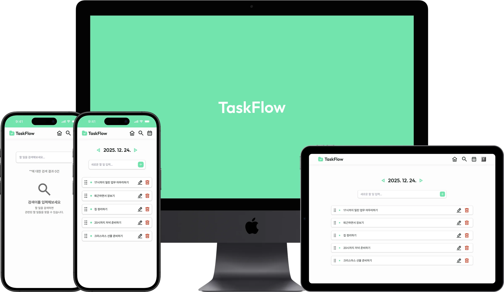
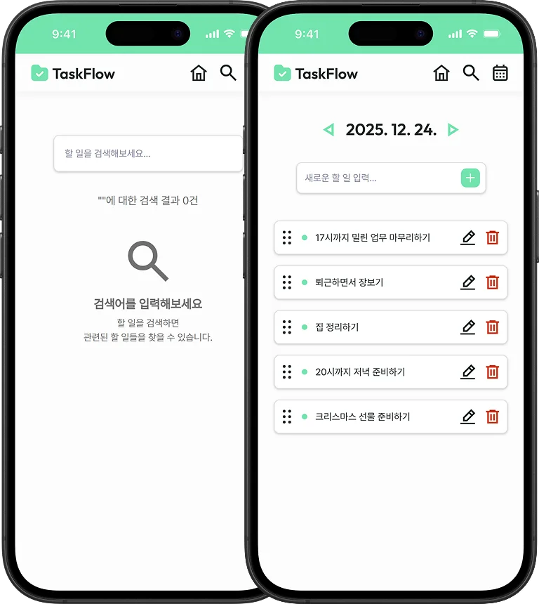
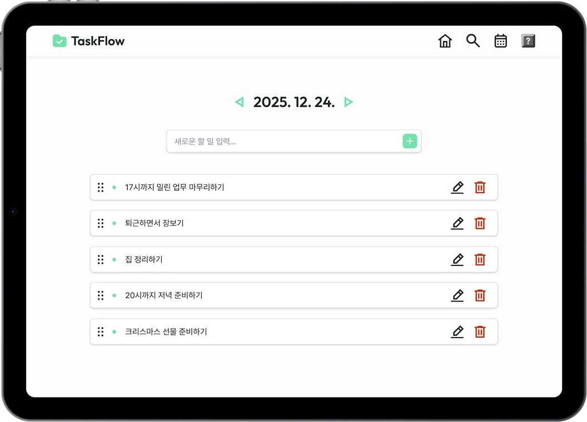
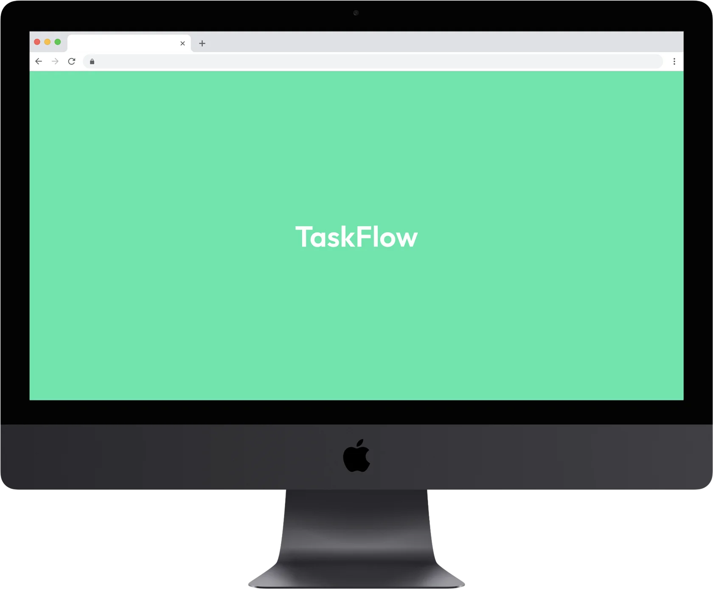
TaskFlow
언제 어디서나, 어떤 기기에서도
편리함과 접근성을 최우선으로 설계한 React 기반의 Todo-List 웹 앱 입니다. React Calendar 연동을 통해 날짜별 일정 관리 및 실시간 할 일 검색이 가능하고 터치 Drag & Drop(dnd-kit)으로 할 일의 순서를 직관적으로 변경이 가능합니다. 또한, 키보드 사용자 편의성을 위해 단축키로 빠르고 편리한 조작이 가능하도록 제작한 웹 앱 입니다.
App 주요 기능
-
달력을 연동하여 날짜별로 List 관리
-
내 할 일 검색 및 필터링
-
단축키를 통해 키보드만으로도 사용 가능
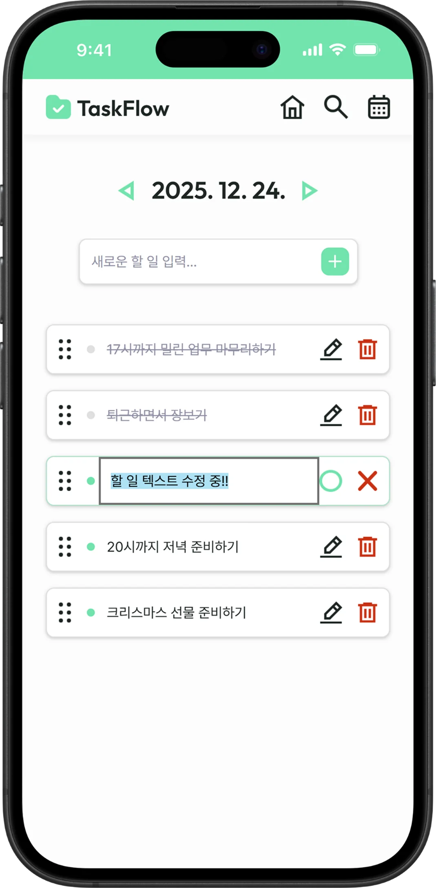
할 일 수정
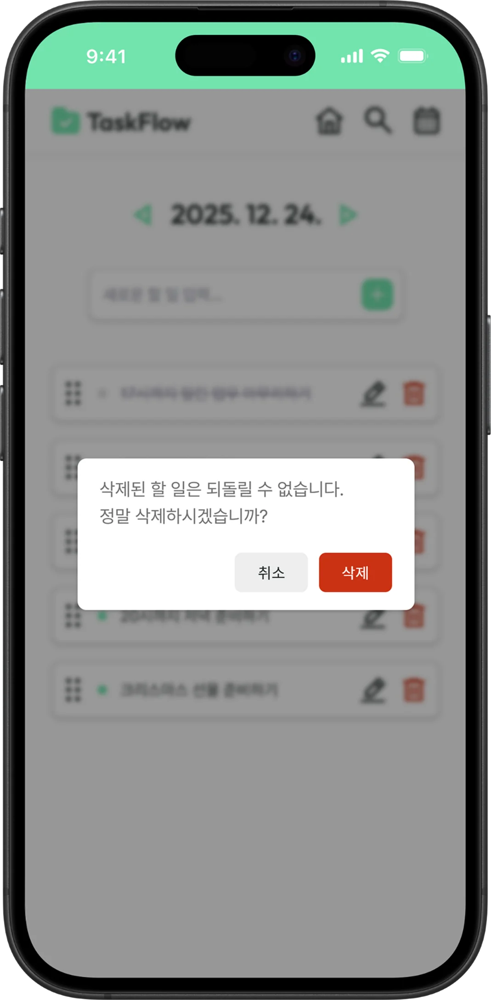
할 일 삭제
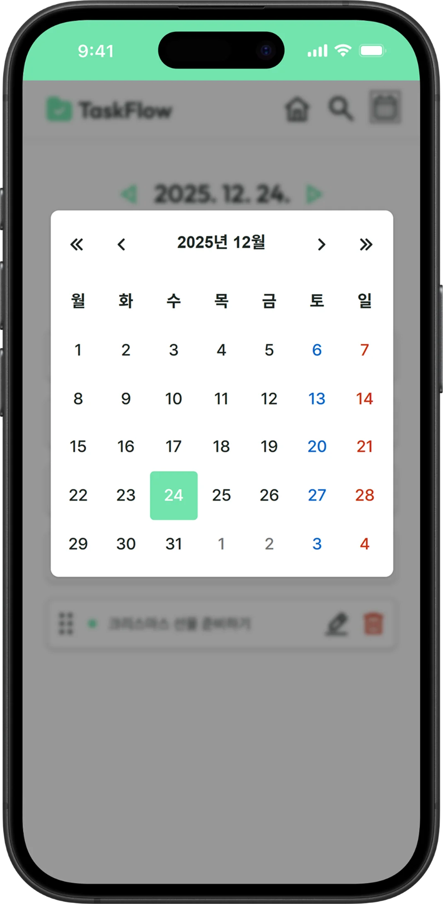
캘린더 연동
TaskFlow 프로젝트 개요
| 항목 | 내용 |
|---|---|
| 작업 기간 | 10 일 |
| 담당 역할 | 기획 / 디자인 / 개발 |
| 기술 스택 | React + Vite + Styled-Components |
| 라이브러리 | React Calendar, dnd-kit |
| 주요 성과 |
|
Color Theme
#72E3AD
#FCFCFC
#DFDFDF
생산성 앱의 경쾌하면서도 안정적인 사용 경험을 위해 Mint Green을 메인 컬러로 선정하고, 눈의 피로도를 최소화하기 위해 밝은 Off-White 배경을 적용하여 한눈에 일정을 파악할 수 있는 인터페이스를 구현했습니다.
Typography
#1E2723
#707070
#8F8FA4
Font-Size
- PC - 1.125rem
- Tablet - 1rem
- Mobile - 0.875rem
Font-family
- 한글 - 프리텐다드
- 영문 - Outfit
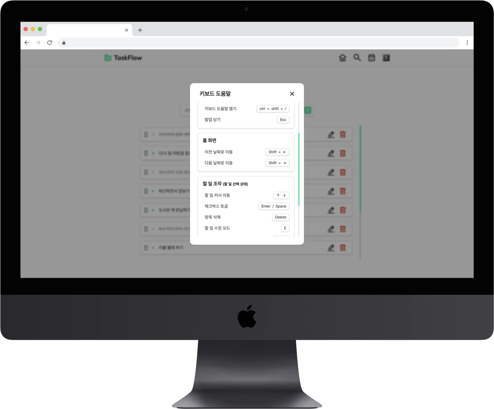
키보드 도움말


Epilogue
감사합니다!
웹 퍼블리셔
이 종 주
였습니다.
오랫동안 익숙했던 일을 내려놓고, 2024년 6월부터 퍼블리셔로서 새
출발을 하였습니다.
늦게 시작한 만큼, 누구보다도 배움에 소홀하지 않겠다는 다짐으로 매일을 채워가고 있습니다.
이 포트폴리오는 저의 새로운 출발선이자, 작은 성장의 흔적들입니다.
앞으로도 끊임없이 배우고, 변화에 발맞추며, 더욱 단단한 퍼블리셔로 나아가겠습니다.
웹 표준·접근성 기반 마크업
실사용자 스크린리더 테스트 수행 경험을 바탕으로, 디자인 의도를 해치지 않으면서도 접근성을 준수하는 견고한 마크업을 구현합니다.
멀티 디바이스 최적화
구형 런처부터 최신 기기까지, Cross-Browser 및 반응형 UI 구현을 통해 사용환경에 구애받지 않는 동일한 사용자 경험을 안정적으로 제공합니다.
Pixel-Perfect 시안 구현
Figma 시안을 CSS 변수에 연동하여 디자인-개발 간 협업 효율을 높이고, 오차 없는 구현으로 수정 요청을 최소화합니다.
인터랙션 및 기능 구현
JS / jQuery와 CSS Keyframes를 복합 활용하여, 사용자의 몰입감을 더하는 동적 기능을 개발합니다.